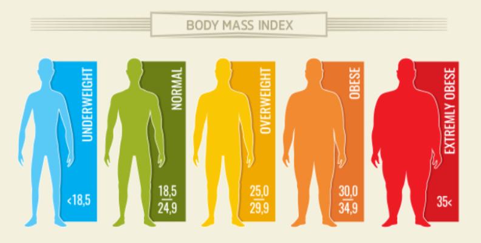

Exploratory Data Anlaysis in Python.
My group's data analysis project, utilizing datasets from Twitch, and Twitter API's to analyze the top 100 streamers and content creators.
We cross-analyzed Sentiment Analysis alongside Statistical Analysis methods such as OLS Regression and more to see if more friendly Twitch streamers
recieved more sponsorships!
Data Analysis, Modeling, and Visualizations in Python.

Using exploratory linear regression and clustering, I aim to examine several attributes from a obisity dataset to find which attributes are the optimal indicators to predict the weight of an individual.
The Presentation Visualization can be found here and you can read my findings in detail in my Final Report.
Comparison of Supervised Machine Learning Algorithms in Python.
This was my smaller scale replication of the CNM06 Publication. I took three algorithms, SVM, Decision Trees, and Random Forests, analysed their performance across 4 datasets and 10 trials. I also split my data per dataset 4 times using testing partitions of 0.2, 0.3, 0.4, and 0.5 to further analyse what effect, if any, data splitting had on my analysis.
The algorithms' performances were tested using 4 metrics: Accuracy, Precision, Recall, and F1 which I discuss further in my Formal Report.
Genetically Inspired Machine Learning Algorithms using Python.
In this Project, I solve a classic Knapsack Problem using Genetic Algorithms, and I break down the different types of crossovers, mutations, and fitnesses functions that can be used for something like this! My Formal Report cross references my findings from 3 different Genetic Algorithms I made, to a result achieved from a Dynamic Programming Algorithm, and I discuss their differences and similarities.
Genetically Inspired Machine Learning Algorithms using Python.
In this Project, I utilize Genetic Algorithms to solve a Traveling Salesman Problem for the top 20 US Cities! The goal is to have this GA ML algorithm determine the most accurate path a saleman can take in the quickest time to all 20 cities. View the full project in my Formal Report.
{kind=link}